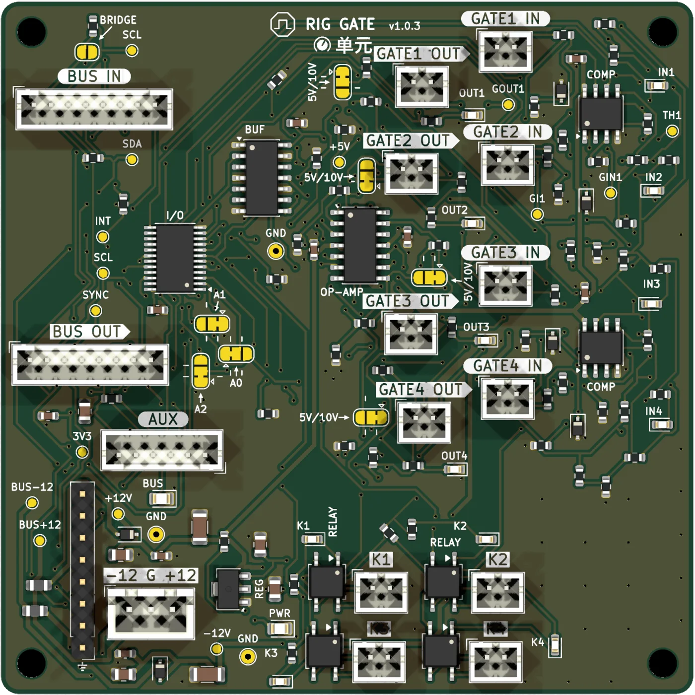
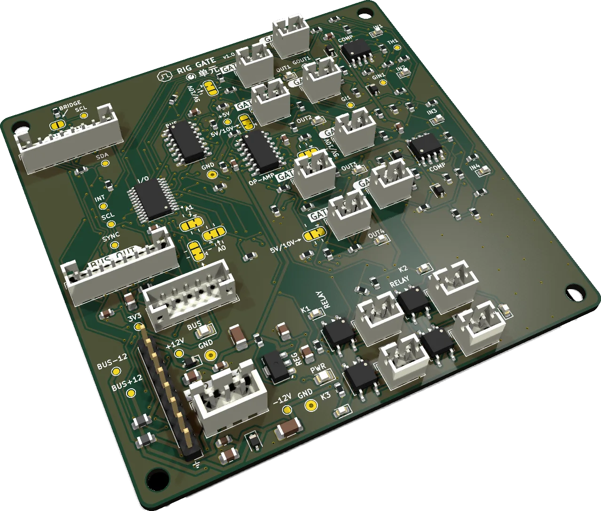
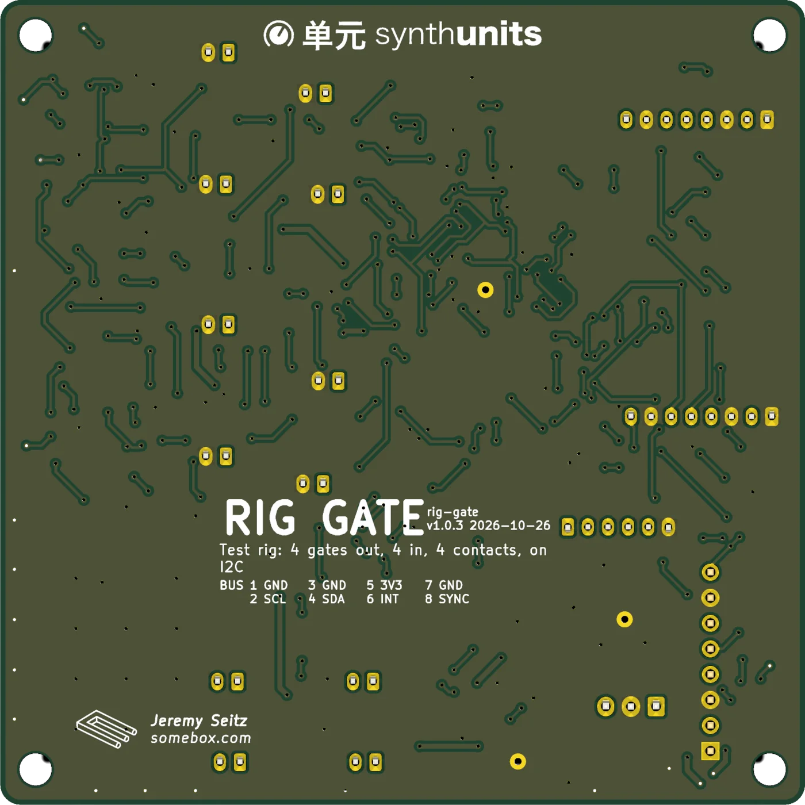

Rig: gates and contacts
Four gate outputs, four gate inputs and four isolated contacts for the test rig, on an I2C port expander.
The test rig's hands. A 16-bit I2C port expander drives four gate outputs, reads four gate inputs and closes four isolated contacts that stand in for a module's switches and buttons. Timed gates come from the ES-8; these are for gates that only have to happen, for logic checks, and for working a module's panel controls during a test.
Each gate output gives 0/+5 V, or 0/+10 V after an op-amp stage, chosen per output by a solder bridge, through 1 kΩ. The gate inputs are comparators with a little hysteresis, safe at ±12 V. Each contact is a solid-state photoMOS relay on its own 2-pin connector, isolated and polarity-free, so it can press a button to ground, throw a toggle whose common is at +12 V, or work one side of an on-off-on switch.
Because every panel control on a minimodule comes out on its own JST connector, the rig can drive them directly: no pogo pins, and no switches added to the module. Like the other rig boards, it is deferred until the first modules are proven. Not built.
- Status
- Drawn and checked; held back from the first order
- Version
- v1.0.3 (2026-10-26)
- Board
- 80 × 80 mm, 2 layers



Block diagram
Drawn by the site's generator from the board's own data: its blocks, its connectors and the links between them. The pots and switches are listed in the block they set.
What it does
- Four gate outputs: 0/+5 V (as built) or 0/+10 V per output, through 1 kΩ.
- Four gate inputs: on at 1.63 V, off at 1.49 V, 94 kΩ, safe at ±12 V.
- Four isolated contacts: 60 V, 100 mA, 16 Ω at most when closed, no polarity.
- Four spare expander pins, with 3.3 V and GND, on a 6-pin JST PH for later.
- A red LED for each gate output, gate input and contact.
- 5 V made on the board from +12 V, for the gate buffer and the relays' LEDs.
- Power: ±12 V on a 3-pin JST XH. The I2C side runs from the bus's 3.3 V.
- Addresses 0x20 to 0x27.
- 80 × 80 mm, two layers.
Connections
| Connector | Wire to | Housing | Pins |
|---|---|---|---|
| POWER (1 -12V, 2 GND, 3 +12V) | a the power board output (straight-through JST XH lead) | JST XH, 3 pins, top entry | 1 −12 V, 2 GND, 3 +12 V |
| BUS IN | the controller, or the next rig board (a straight 8-pin PH lead) | JST PH, 8 pins, top entry | 1 GND, 2 SCL, 3 GND, 4 SDA, 5 +3V3, 6 INT, 7 GND, 8 SYNC |
| BUS OUT | the controller, or the next rig board (a straight 8-pin PH lead) | JST PH, 8 pins, top entry | 1 GND, 2 SCL, 3 GND, 4 SDA, 5 +3V3, 6 INT, 7 GND, 8 SYNC |
| GATE1 OUT | a module's gate or trigger input | JST PH, 2 pins, top entry | 1 gate, 2 GND |
| GATE2 OUT | a module's gate or trigger input | JST PH, 2 pins, top entry | 1 gate, 2 GND |
| GATE3 OUT | a module's gate or trigger input | JST PH, 2 pins, top entry | 1 gate, 2 GND |
| GATE4 OUT | a module's gate or trigger input | JST PH, 2 pins, top entry | 1 gate, 2 GND |
| GATE1 IN | a module's gate or trigger output | JST PH, 2 pins, top entry | 1 tip, 2 GND |
| GATE2 IN | a module's gate or trigger output | JST PH, 2 pins, top entry | 1 tip, 2 GND |
| GATE3 IN | a module's gate or trigger output | JST PH, 2 pins, top entry | 1 tip, 2 GND |
| GATE4 IN | a module's gate or trigger output | JST PH, 2 pins, top entry | 1 tip, 2 GND |
| K1 SWITCH | a module's button or toggle connector (a contact lead, D34) | JST PH, 2 pins, top entry | 1, 2: an isolated contact |
| K2 SWITCH | a module's button or toggle connector (a contact lead, D34) | JST PH, 2 pins, top entry | 1, 2: an isolated contact |
| K3 SWITCH | a module's button or toggle connector (a contact lead, D34) | JST PH, 2 pins, top entry | 1, 2: an isolated contact |
| K4 SWITCH | a module's button or toggle connector (a contact lead, D34) | JST PH, 2 pins, top entry | 1, 2: an isolated contact |
| AUX | spare expander pins, for later | JST PH, 6 pins, top entry | 1 P14, 2 P15, 3 P16, 4 P17, 5 +3V3, 6 GND |
Every panel control has its own connector with a fixed pinout, so any lead of the right size fits any module. Pin 1 is the square pad.
LEDs
On the board: PWR (green), BUS (green), OUT1 (red), K1 (red), OUT2 (red), IN2 (red), K2 (red), OUT3 (red), K3 (red), OUT4 (red), IN4 (red), K4 (red).
Wiring and setup
- Power from one of the power hub's outputs on a 3-pin JST XH lead, plugged in before the supply is switched on.
- The rig bus: BUS IN and BUS OUT, 8-pin JST PH, wired straight through.
- GATE OUT 1 to 4 (1 gate, 2 GND) to a module's gate or trigger input; GATE IN 1 to 4 (1 tip, 2 GND) from a module's gate or trigger output.
- K1 to K4: 2-pin JST PH contacts, either way round, into a module's button or toggle connector. Two contact leads into one 3-pin housing (common on pin 2) work a toggle.
- 5V/10V jumpers, one per gate output: 5 V as built; cut it and bridge the other side for 10 V.
- Address jumpers A0 to A2: all GND is 0x20, and each one moved to 3.3 V adds 1, 2 or 4.
- Bridge the PULL-UP jumper on one board of the chain only; two bridged still work, three are marginal.
Limits and open questions
- Not built or measured; deferred until the first modules are proven.
- The expander powers up with its outputs high: if the firmware makes the pins outputs before writing them, all four gates fire once into the module.
- A 5 V gate output held above about 5.5 V from outside back-feeds the 5 V rail, which can close the contacts. A later version gets a smaller resistor or a zener on that rail.
- A gate output forced to 12 V while low overloads its 1 kΩ resistor.
- Some tracks run under the M3 screw heads: use nylon screws or washers.
Development notes
- To the Pico 2 it is an I2C peripheral at 0x20. The host sends GATE (a channel, 1 or 0) for an output and K (a channel, 1 or 0) for a contact.
- The expander's interrupt goes to the bus's shared INT line, which is open-drain and pulled up at the controller.
- At start-up the firmware writes the output register before it configures the pins as outputs, so nothing fires.
- The gate inputs read inverted: the comparators pull low while a gate is high, and the firmware turns that around.
Schematic
The schematic as drawn, with each chip named by its function rather than its part number. The design isn't open source yet, so there are no files to download.


Would you use a RIG GATE? A thumbs-up on its tracking issue is how I count interest, and you can subscribe there to follow its bring-up. Questions and ideas go to the discussions.